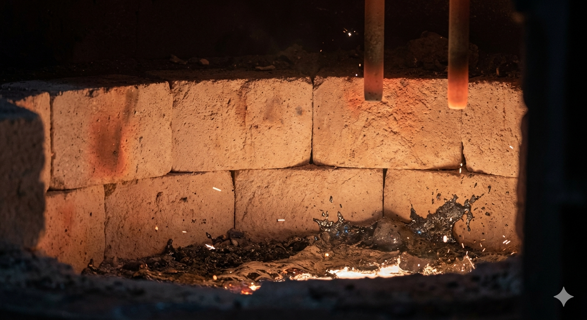
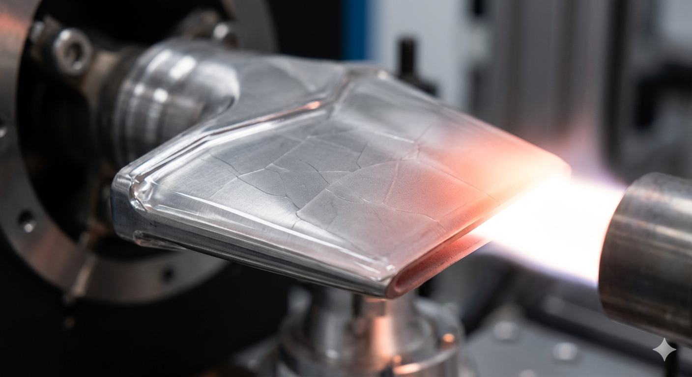
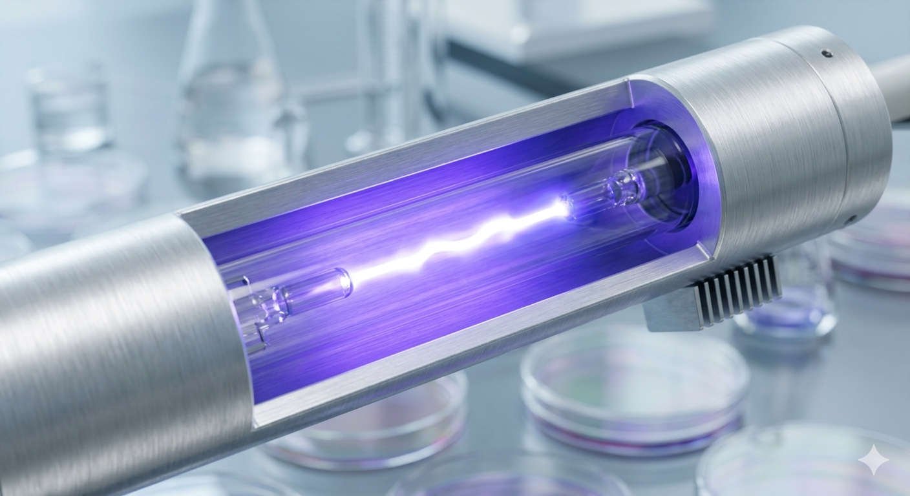
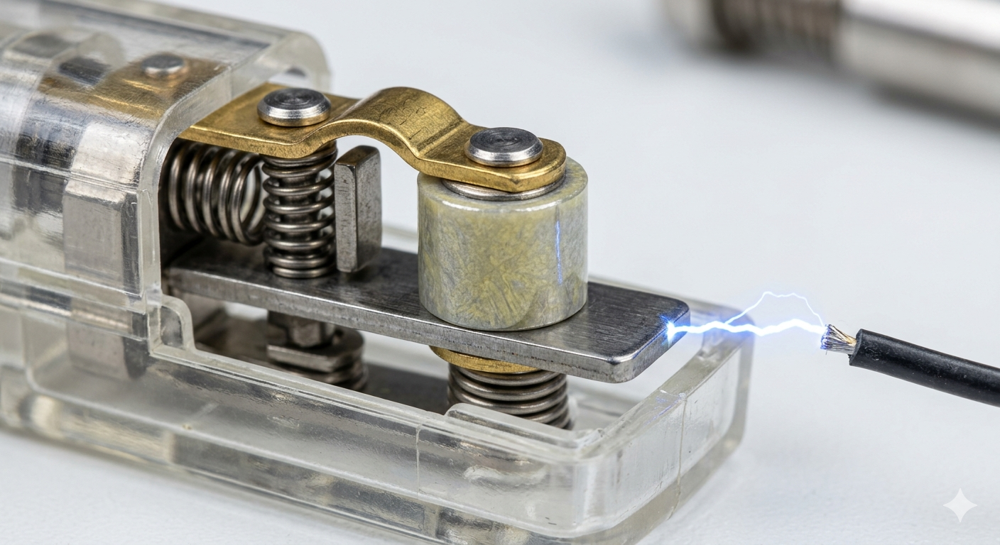

Documentación Técnica
La magnesia (óxido de magnesio) es el material refractario básico por excelencia en la industria pesada.
Fundamento Técnico: Posee un punto de fusión extremadamente alto (aprox. 2852°C). Su carácter químico básico la hace indispensable en procesos donde las escorias también son básicas.
Resistencia Química: Excelente estabilidad frente al ataque de escorias ricas en hierro y cal.
Inercia Térmica: Alta capacidad para retener calor, optimizando la eficiencia energética del horno.
Aplicación: Revestimiento interno de convertidores de acero (procesos LD), hornos de arco eléctrico y fundiciones de metales no ferrosos.

Esta imagen muestra el interior de un horno de arco eléctrico en pleno funcionamiento. Se puede ver el revestimiento refractario de ladrillos de Magnesia (de color beige-marrón en la pared) soportando el intenso calor y el contacto con el metal fundido al rojo vivo y la escoria, demostrando su altísima resistencia térmica.
La espinela de magnesio y aluminio es un compuesto cerámico avanzado que combina las mejores propiedades de la magnesia y la alúmina.
Fundamento Técnico: Destaca por su alta resistencia al choque térmico, lo que significa que no se fractura ante cambios bruscos de temperatura.
Dureza Elevada: Gran resistencia al desgaste erosivo provocado por gases a alta velocidad.
Baja Reactividad: Muy estable ante la corrosión por gases ácidos y ambientes reductores.
Aplicación: Recubrimientos para zonas de transición en hornos cementeros, componentes de turbinas de gas y escudos térmicos aeroespaciales.

Recubrimiento Protector Aeroespacial En esta imagen, un panel metálico de ingeniería aeroespacial está protegido por una capa densa y lisa de Espinela sintetizada. La sección superior del panel está sometida a un calor extremo (brillo naranja), mientras que la zona inferior, protegida por el recubrimiento de Espinela, permanece estructuralmente intacta, ilustrando su función como barrera térmica avanzada.
A diferencia del vidrio común, la sílice fundida es dióxido de silicio en estado vítreo de alta pureza, fabricado mediante la fusión de arena de cuarzo.
Fundamento Técnico: Su coeficiente de expansión térmica es prácticamente nulo (5.5 x 10-7 /°C), lo que le permite ser sumergida en agua helada estando al rojo vivo sin romperse.
Transmisión Óptica: Excelente transparencia en el espectro ultravioleta (UV), donde el vidrio normal es opaco.
Resistencia Térmica: Soporta temperaturas de operación continua de hasta 1000°C.
Aplicación: Ampollas para lámparas halógenas, lámparas de desinfección UV, ventanas de hornos de alta temperatura y espejos para telescopios

Aquí vemos una lámpara de desinfección ultravioleta (UV) industrial en funcionamiento dentro de un entorno de laboratorio esterilizado. El tubo transparente que contiene el arco de plasma brillante es de Sílice Fundida. Su excepcional pureza óptica permite que la radiación UV pase sin obstáculos, soportando al mismo tiempo la alta temperatura del plasma sin deformarse.
Es un material cerámico ferroeléctrico con una estructura cristalina tipo perovskita, fundamental para la conversión de energía mecánica en eléctrica.
Fundamento Técnico: Basado en el efecto piezoeléctrico. Al aplicar una presión mecánica sobre el cristal, se genera una diferencia de potencial (voltaje) suficiente para crear una chispa.
Alta Constante Piezoeléctrica: Genera altos voltajes con deformaciones mínimas.
Temperatura de Curie Elevada: Mantiene sus propiedades eléctricas incluso en condiciones de calor intenso sin despolarizarse.
Aplicación: Elementos de ignición en encendedores de cocina, calentadores de gas, sensores de impacto y transductores ultrasónicos.

Esta imagen macroscópica de primer plano muestra el mecanismo interno de un encendedor piezoeléctrico industrial. El pequeño bloque cilíndrico de cerámica de color gris oscuro es el Titanato de Plomo. La imagen captura el momento exacto en que un martillo metálico golpea la cerámica, provocando que la tensión mecánica genere una chispa eléctrica azul brillante que salta entre los electrodos, activando el flujo de gas.